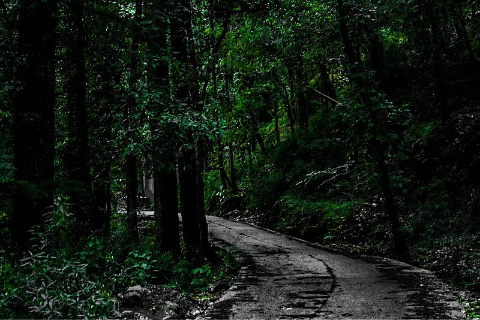

IMFROMATION
Hidimba Devi Temple, locally known as Dhungari Temple, also known variously as the Hadimba Temple, is located in Manali, a hill station in the State of Himachal Pradesh in north India.
It is an ancient cave temple dedicated to Hidimbi Devi, wife of Bhima, a figure in the Indian epic Mahabharata. The temple is surrounded by a cedar forest called Dhungiri Van Vihar at the foot of the Himalayas. The sanctuary is built over a huge rock jutting out of the ground which was worshiped as an image of the deity. The structure was built in 1553 by Maharaja Bahadur Singh.
The Hidimba Devi temple is 24 meters tall.
devi
The veneration of Hidimba Devi holds significant cultural prominence in Manali, where she is revered as a deity. While Navaratri conventionally sees the worship of Goddess Durga, the spiritual spotlight in Manali shifts to Goddess Hidimba. The temple draws considerable crowds, particularly during Navaratri, attesting to the fervent devotion of the worshippers.[4] Annually, the locals enthusiastically observe the Hidimba Devi Fair, a cherished tradition coinciding with the arrival of spring
The veneration of Hidimba Devi holds significant cultural prominence in Manali, where she is revered as a deity. While Navaratri conventionally sees the worship of Goddess Durga, the spiritual spotlight in Manali shifts to Goddess Hidimba. The temple draws considerable crowds, particularly during Navaratri, attesting to the fervent devotion of the worshippers.[4] Annually, the locals enthusiastically observe the Hidimba Devi Fair, a cherished tradition coinciding with the arrival of spring
MUST SEE